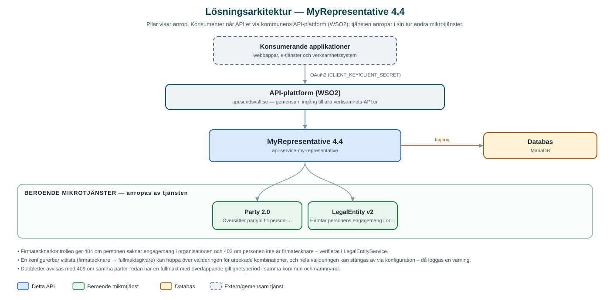

MyRepresentative
Registrerar och håller ordning på fullmakter (mandat) mellan parter, så att kommunens tjänster vet vem som får företräda vem.
Om API:et
MyRepresentative hanterar fullmakter mellan parter i kommunen: en fullmaktsgivare (till exempel ett företag) ger en fullmaktstagare rätt att agera ombud. Fullmakterna lagras per kommun och namnrymd (namespace), så att olika verksamhetsområden kan hålla sina fullmakter åtskilda. Andra tjänster slår upp fullmakterna för att avgöra om en person får företräda en organisation i ett visst sammanhang.
När en fullmakt skapas för en organisation kontrollerar tjänsten att den person som ställer ut fullmakten verkligen är behörig firmatecknare: person- och organisationsnummer slås upp via Party-tjänsten och personens engagemang i organisationen hämtas från LegalEntity-tjänsten, som också anger om personen är firmatecknare. Saknas engagemang avvisas fullmakten med 404, och en person som inte är firmatecknare avvisas med 403.
Fullmakter har giltighetstid (aktiv från och inaktiv efter), kan sökas fram med filter, och tas bort mjukt genom tidsstämpling i stället för att raderas. Dubbletter med överlappande giltighetsperiod för samma parter avvisas.
Det här gör API:et
- Registrera fullmakter – Fullmakter skapas med fullmaktsgivare, fullmaktstagare, firmatecknare och giltighetsperiod, per kommun och namnrymd.
- Firmatecknarkontroll – Vid skapande verifieras att utställaren är behörig firmatecknare för organisationen via LegalEntity-tjänsten.
- Sökning – Fullmakter söks fram med filter på bland annat parter och giltighet.
- Detaljer med signeringsinformation – Enskilda fullmakter hämtas med detaljer inklusive information om undertecknandet.
- Mjuk borttagning – Fullmakter tas bort genom tidsstämpling (soft delete) och finns kvar för spårbarhet.
API-dokumentation
API:ets samtliga resurser, parametrar och datamodeller finns beskrivna i en OpenAPI-specifikation som är hämtad ur källkodsförrådet. Den kan utforskas interaktivt i Swagger UI eller laddas ner som YAML.
Teknisk dokumentation
Nedan beskrivs hur tjänsten är uppbyggd, vilka andra tjänster den anropar och vad som krävs för att driftsätta den. Informationen är härledd ur källkoden och dess konfiguration på GitHub.
Arkitektur

API:et är en mikrotjänst (Java 25, Spring Boot via kommunens gemensamma tjänsteplattform dept44 (8.0.8), byggd med Maven). Konsumenter når tjänsten via kommunens gemensamma API-plattform (WSO2) på api.sundsvall.se – tjänsten anropas aldrig direkt. Tjänsten anropar i sin tur andra mikrotjänster i kommunens tjänstelandskap. Lagring: MariaDB med Flyway-migrationer; fullmakter lagras med parter, giltighetsperiod och mjuk borttagning.
Teknikstack
- Språk: Java 25
- Ramverk: Spring Boot via kommunens gemensamma tjänsteplattform dept44 (8.0.8), byggd med Maven
- Databas: MariaDB med Flyway-migrationer; fullmakter lagras med parter, giltighetsperiod och mjuk borttagning
- Övrigt: Feign-klienter med circuit breakers via dept44
Beroenden till andra mikrotjänster
Tjänsten anropar följande mikrotjänster. Versionerna är hämtade ur källkodens integrationsklienter.
| Tjänst | Version | Användning |
|---|---|---|
| Party | 2.0 | Översätter partyId till person- respektive organisationsnummer vid firmatecknarkontrollen. |
| LegalEntity | v2 | Hämtar personens engagemang i organisationen och avgör om personen är behörig firmatecknare. |
Konfiguration och driftsättning
- application.yml med URL och OAuth2-klientuppgifter för Party och LegalEntity
- MariaDB-anslutning; databasschemat versionshanteras med Flyway
- Firmatecknarvalideringen kan stängas av via konfiguration, och en vitlista kan undanta specifika kombinationer av firmatecknare och fullmaktsgivare
- Anrop görs per kommun och namnrymd – municipalityId och namespace ingår i API-vägarna
Noterbart ur källkoden
- Firmatecknarkontrollen ger 404 om personen saknar engagemang i organisationen och 403 om personen inte är firmatecknare – verifierat i LegalEntityService.
- En konfigurerbar vitlista (firmatecknare → fullmaktsgivare) kan hoppa över valideringen för utpekade kombinationer, och hela valideringen kan stängas av via konfiguration – då loggas en varning.
- Dubbletter avvisas med 409 om samma parter redan har en fullmakt med överlappande giltighetsperiod i samma kommun och namnrymd.
- Borttagning är en mjuk radering där fältet deleted tidsstämplas – fullmakten ligger kvar i databasen.
- OpenAPI-specens titel är api-myrepresentatives (pluralform) medan repot och README använder MyRepresentative.
Källkod
Källkoden är öppen och finns hos Sundsvalls kommun på GitHub. I källkodsförrådet finns även instruktioner för att klona, konfigurera och starta tjänsten i egen miljö.